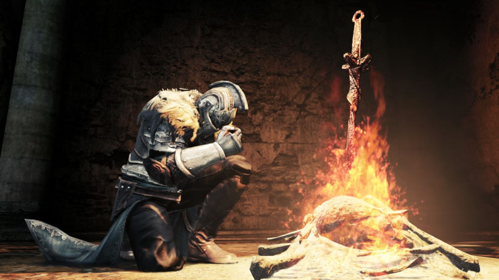
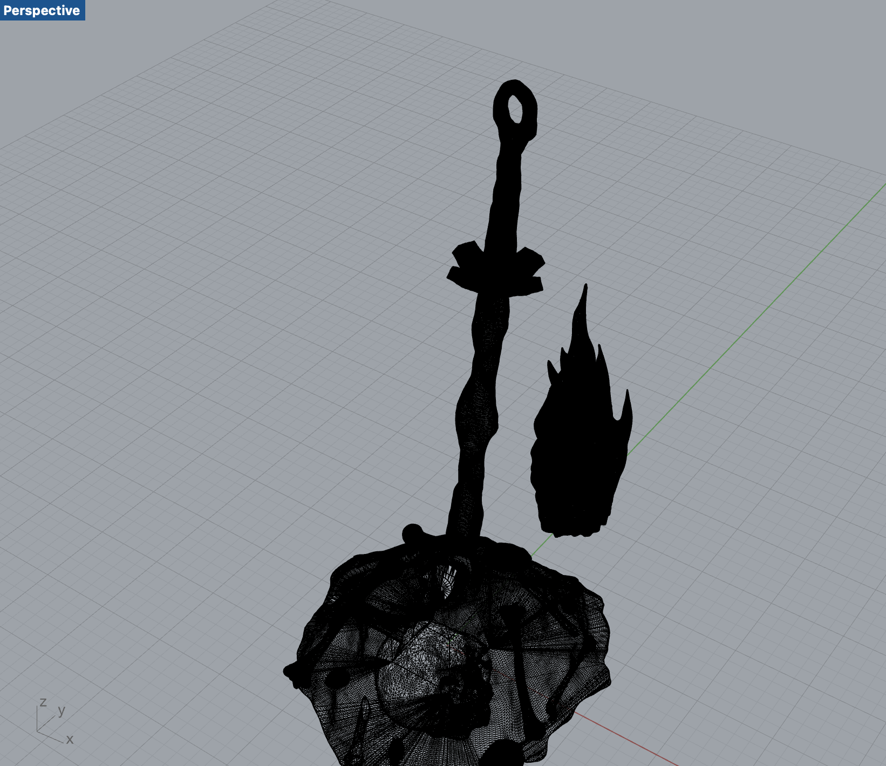
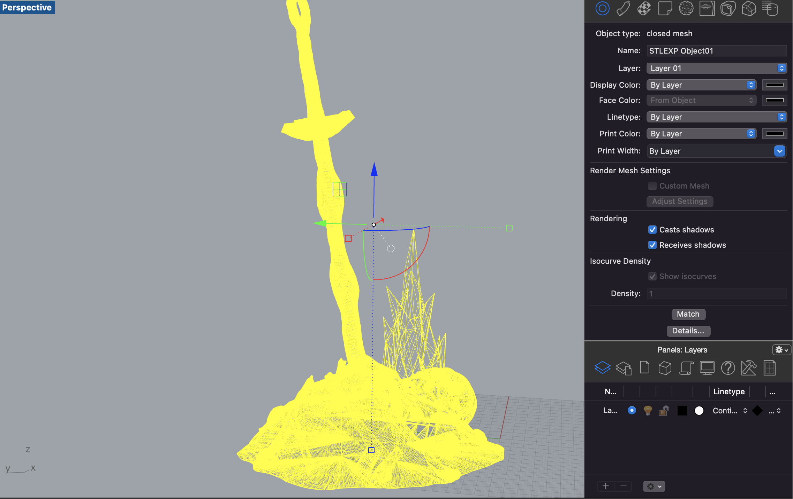
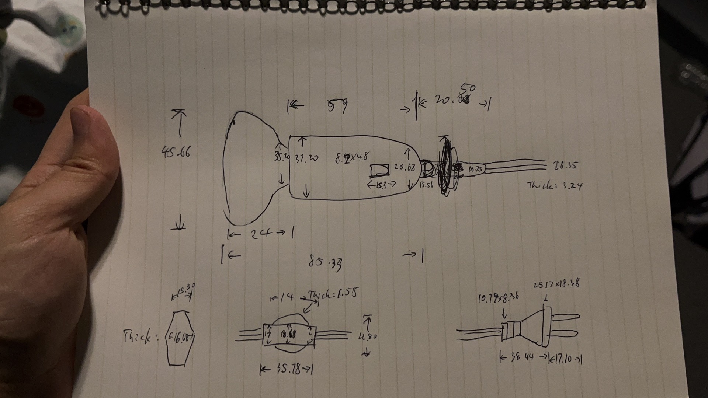
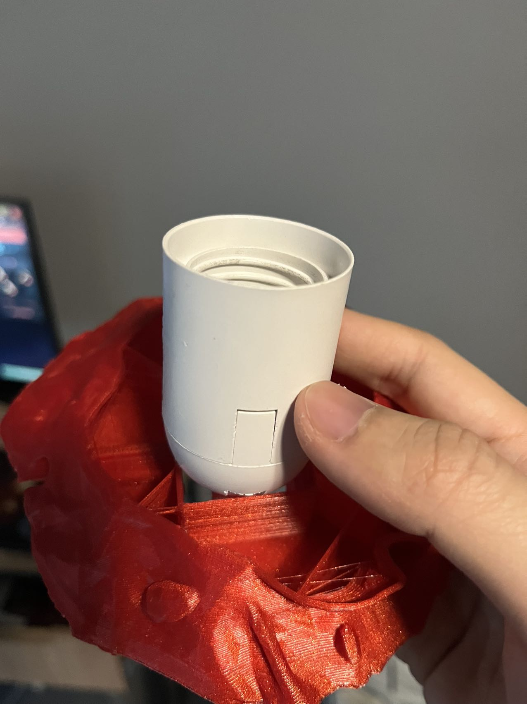
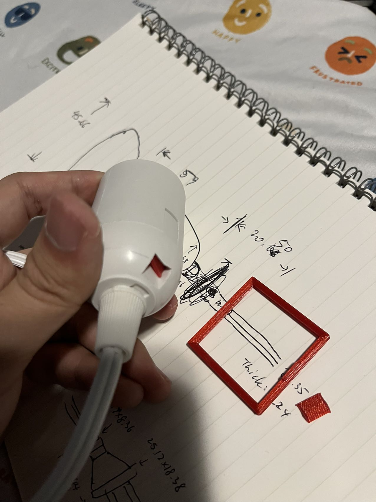
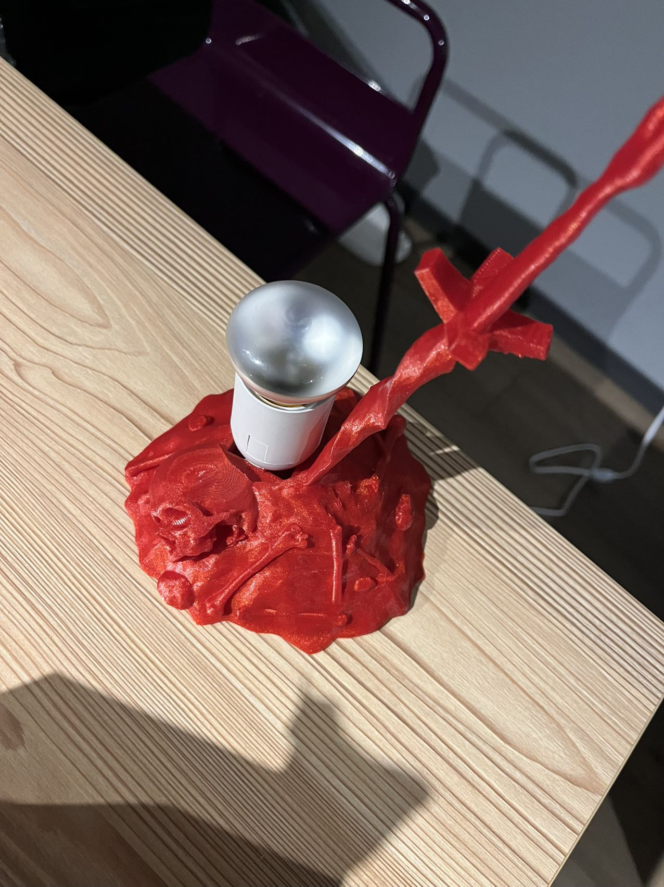
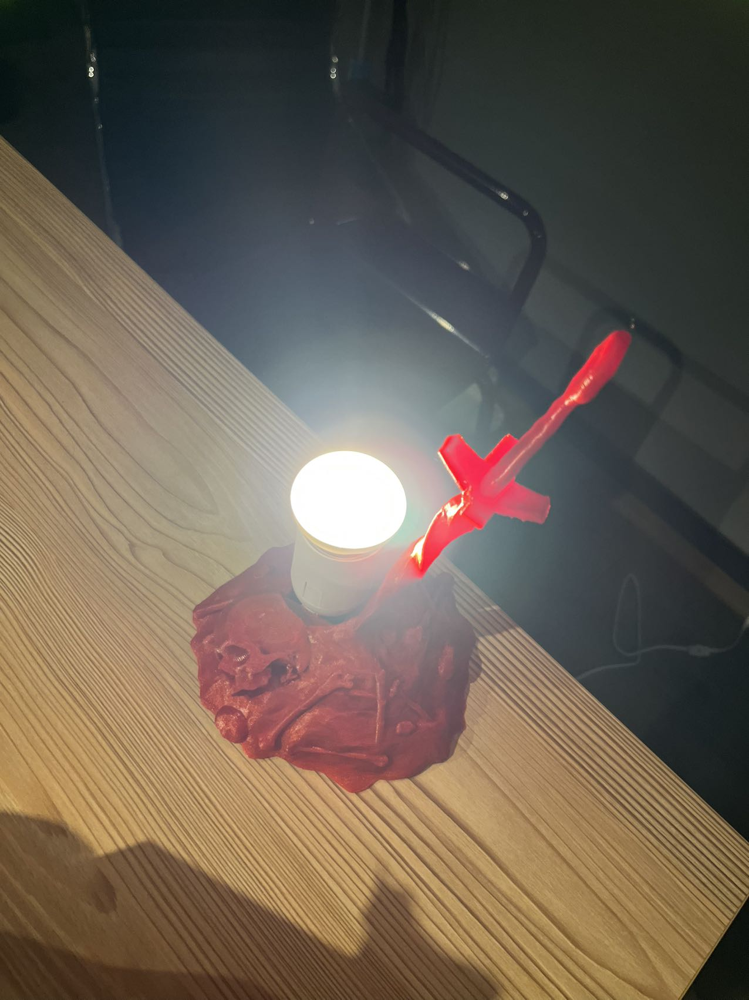

Part A
I tried to find models related to my fav video game "Souls series" on Thingiverse and I found
this "thing" by
ClassyGoat. The original object is a bonfire,
which is an iconic object in the souls series.
Bonfire in Dark Souls:

The "thing" contains two separated stl files for the bonfire pit and the fire. The fire is a closed mesh
while the pit is a block of 9 closed meshes. I exploded the block first and then used "MeshBooleanUnion" to
combine all of the closed meshes and ended up with a single closed mesh. I also used "ReduceMesh" to speed
up the process.


Part B
I started with measuring the latern innereds.

I decided to keep using the bonfire model I donwloaded and modified it to make it fit with the innereds. I
used "MeshBoolenDifference" multiple times to make big holes that can fit with the innereds as well as the
light bulb. I tested with printing the base of the lamp but it failed to fit with the innereds firmly.

I added two snap joints to make sure the innereds can fit firmly. I tested with printing the joints by
themselves again but the initial print failed and stuck in the holes of the innereds.

I modified the snap joints again and started printing the whole base, and this is how it looks like after
12-hours of printing:


Here is the gcode file.